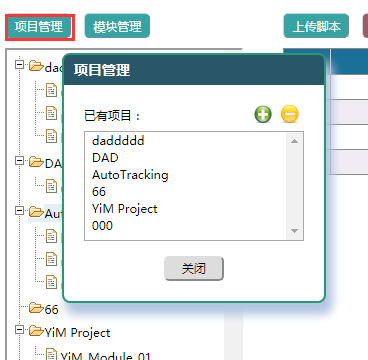
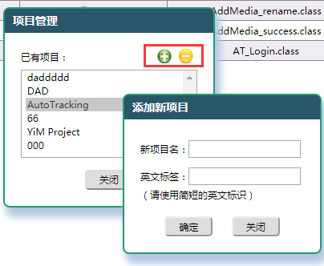
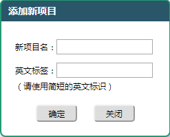
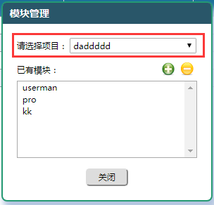

在ATMP中，测试脚本和测试集都是以项目为单位进行管理的，而为了能让用户在大量测试脚本中方便地进行管理、查找等操作，我们又引入了模块的概念。 项目和模块的管理在系统的'测试脚本'板块中，选择对应的顶部菜单进入测试脚本管理页，按如下步骤可以进行项目和模块的创建与管理。
|
1. 点击项目树上方的'项目管理'按钮，将打开项目管理弹层。

|
2. 选中项目点击'-'按钮可删除该项目，点击'+'按钮则会打开新增项目弹层。

|
3. 填写项目名称（可以是中文）和项目标签（必须是英文或数字），点击确定即可添加新的项目。

|
4. 模块的删除和添加与项目相同，区别是必须为模块指定所属项目。

|
注意事项：